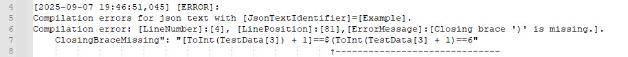

Error Details
- If evaluated JSON files contain errors, the error details are stored in property CompilationErrors of interface JsonQL.Compilation.ICompilationResult.
Note
See Result Data Structure: JsonQL.Compilation.ICompilationResult for more details on data structure used for the result.
- Each item in property CompilationErrors in`JsonQL.Compilation.ICompilationResult <https://github.com/artakhak/JsonQL/blob/main/JsonQL/Compilation/ICompilationResult.cs>`_ is of type JsonQL.Compilation.ICompilationErrorItem which has details on an error such as:
JSON file identifier that resulted in error.
Position in JSON file for the error.
Error message.
- Errors can happen for number of reasons, some of which are listed here:
Missing or extra closing braces for functions or arrays.
Unknown symbols used in JsonQL expressions.
‘assert’ functions failing the evaluated expressions.
JonQL uses JsonQL.Compilation.ICompilationResultLogger to log error details, the implementation of which can be replaced if necessary.
Example
Missing closing braces error
Consider Example.json below that has unclosed brace in JsonQL expression.
File Example.json
{
"TestData": [ 1, 3, 4, "5", "TEST", 7 ],
"ValidFunctionCallExample": "[ToInt(TestData[3]) + 1]==$(ToInt(TestData[3]) + 1)==6",
"InvalidFunctionCallExample_ClosingBraceMissing": "[ToInt(TestData[3]) + 1]==$(ToInt(TestData[3] + 1)==6"
}
The C# code snippet below loads the file Example.json
// JsonQL.Compilation.IJsonCompile is normally setup in DI and is injected into classes that depend on this interface.
JsonQL.Compilation.IJsonCompile jsonCompiler;
var result = jsonCompiler.Compile(new JsonTextData("Example", this.LoadExampleJsonFile("Example.json")));
The result result is serialized in JSON file Result.json which has the error details.
The screenshot below shows the error details logged using the error data in Result.json.

Note
For more examples demonstrating errors look at examples in this folder: FailureExamples: